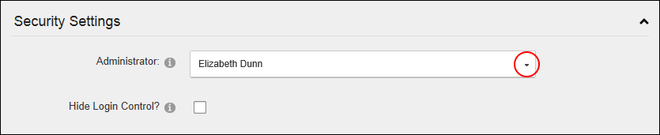

How to set the Primary Administrator who will receive email notification of member activities such as new registrations, unregistered accounts and feedback submitted using the Feedback module (unless this is overridden on the Feedback module). In new DNN installations, the Host user account that is created is selected by default for the first site that is created.
Tip: To create new Administrators, add a new user account (
